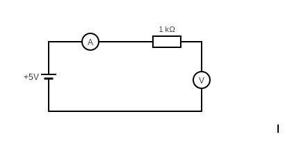

{% extends "base.html" %} {% block title %}Home{% endblock %} {% block content
%}
<link
  rel="stylesheet"
  type="text/css"
  href="{{ url_for('static', filename='styles.css') }}"
/>
<link rel="icon" type="image/x-icon" href="../images/logo.ico" />
<h1>
  
  
</h1>

<p></p>

<div class="row">
  <div class="tab">
    <button
      class="tablinks"
      onclick="openchoice(event, 'Ohm')"
      id="defaultOpen"
    >
      Lei de Ohm
    </button>
    <button class="tablinks" onclick="openchoice(event, 'MeiaOnda')">
      Retificador meia-onda
    </button>
    <button class="tablinks" onclick="showImage('circuit_R3.png')">
      Retificador Onda Completa
    </button>
  </div>
  <div class="column middle">
    <h2>Escolha um dos três circuitos</h2>
    <p>Clique OK para seguir</p>
    
    <!-- Surround the select box within a "custom-select" DIV element.
Remember to set the width: -->
    <div style="display: inline-block; width: 200px">
      <select id="selectVcc">
        <option value="0">Seleccionar V<sub>cc</sub>:</option>
        <option value="1">1</option>
        <option value="2">2</option>
        <option value="3">3</option>
        <option value="4">4</option>
        <option value="5">5</option>
      </select>
    </div>
    <div style="display: inline-block; width: 200px">
      <select id="selectR">
        <option value="0">Seleccionar R:</option>
        <option value="1">1</option>
        <option value="2">1.1</option>
        <option value="3">1.5</option>
      </select>
    </div>
  </div>
  <div class="column right">
    <a href="#" class="next round" id="measureVoltage" data-parameter="voltage"
      ><b>Medir Tensão</b> &raquo;
    </a>
    <p id="resultado-medicao"></p>
    <p></p>
    <a href="#" class="next round" id="measureCurrent" data-parameter="current"
      ><b>Medir Corrente</b> &raquo;
    </a>
    <p id="resultado-medicao"></p>
  </div>

  <!----------------------------------------->
  <!-- Scripts zone -->
  <!----------------------------------------->

  <script>
    document
      .getElementById("measureVoltage")
      .addEventListener("click", function () {
        // Obter o valor do atributo data-parameter
        const parameter = this.dataset.parameter;

        // Obter valores dos selects
        const Vcc = document.getElementById("selectVcc").value;
        const Resistance = document.getElementById("selectR").value;

        // Validar valores antes do fetch
        if (Vcc === "0" || Resistance === "0") {
          alert("Tem de primeiro seleccionar os valores de Vcc e R!");
          return; // Interrompe a execução se valores forem inválidos
        }
        // Enviar requisição AJAX para a rota /ctrl_VirtualBench
        const url =
          "/config_VirtualBench?parameter=" +
          parameter +
          "&Vcc=" +
          Vcc +
          "&R=" +
          Resistance;
        fetch(url)
          .then((response) => response.json())
          .then((data) => {
            // Acessar a variável measurement_results
            console.log(data.measurement_result);
            document.getElementById("resultado-medicao").innerHTML =
              data.measurement_result;
          });
      });
  </script>

  <script>
    document
      .getElementById("measureCurrent")
      .addEventListener("click", function () {
        // Obter o valor do atributo data-parameter
        const parameter = this.dataset.parameter;

        // Obter valores dos selects
        const Vcc = document.getElementById("selectVcc").value;
        const Resistance = document.getElementById("selectR").value;

        // Validar valores antes do fetch
        if (Vcc === "0" || Resistance === "0") {
          alert("Tem de primeiro seleccionar os valores de Vcc e R!");
          return; // Interrompe a execução se valores forem inválidos
        }
        // Enviar requisição AJAX para a rota /ctrl_VirtualBench
        const url =
          "/config_VirtualBench?parameter=" +
          parameter +
          "&Vcc=" +
          Vcc +
          "&R=" +
          Resistance;
        fetch(url)
          .then((response) => response.json())
          .then((data) => {
            // Acessar a variável measurement_results
            console.log(data.measurement_result);
            document.getElementById("resultado-medicao").innerHTML =
              data.measurement_result;
          });
      });
  </script>

  <script>
    function openchoice(evt, choice) {
      var i, tabcontent, tablinks;
      tabcontent = document.getElementsByClassName("tabcontent");
      for (i = 0; i < tabcontent.length; i++) {
        tabcontent[i].style.display = "none";
      }
      tablinks = document.getElementsByClassName("tablinks");
      for (i = 0; i < tablinks.length; i++) {
        tablinks[i].className = tablinks[i].className.replace(" active", "");
      }
      document.getElementById(choice).style.display = "block";
      evt.currentTarget.className += " active";
    }

    // Get the element with id="defaultOpen" and click on it
    document.getElementById("defaultOpen").click();
  </script>

  <!-- Funcção para accionar os relés-->
  <script>
    function accionarReles(parametro) {
      // Transforma o parâmetro em uma string binária
      const parametroBinario = "0b" + parametro;
      var url = `/atualizar_shift_register?parametro=${parametroBinario}`;
      fetch(url)
        .then((response) => {
          // Lida com a resposta, se necessário
          console.log("Requisição enviada!");
        })
        .catch((error) => {
          // Lida com possíveis erros
          console.error("Erro:", error);
        });
    }

    function redirecionarPaginaEAcionar(parametro, url) {
      accionarReles(parametro); // Chama a função accionarReles com o parâmetro especificado
      window.location.href = url; // Redireciona para a URL especificada
    }
  </script>

  <!--  Script relativo ao custom menu  -->
  <script>
    var x, i, j, l, ll, selElmnt, a, b, c;
    /*look for any elements with the class "custom-select":*/
    x = document.getElementsByClassName("custom-select");
    l = x.length;
    for (i = 0; i < l; i++) {
      selElmnt = x[i].getElementsByTagName("select")[0];
      ll = selElmnt.length;
      /*for each element, create a new DIV that will act as the selected item:*/
      a = document.createElement("DIV");
      a.setAttribute("class", "select-selected");
      a.innerHTML = selElmnt.options[selElmnt.selectedIndex].innerHTML;
      x[i].appendChild(a);
      /*for each element, create a new DIV that will contain the option list:*/
      b = document.createElement("DIV");
      b.setAttribute("class", "select-items select-hide");
      for (j = 1; j < ll; j++) {
        /*for each option in the original select element,
      create a new DIV that will act as an option item:*/
        c = document.createElement("DIV");
        c.innerHTML = selElmnt.options[j].innerHTML;
        c.addEventListener("click", function (e) {
          /*when an item is clicked, update the original select box,
          and the selected item:*/
          var y, i, k, s, h, sl, yl;
          s = this.parentNode.parentNode.getElementsByTagName("select")[0];
          sl = s.length;
          h = this.parentNode.previousSibling;
          for (i = 0; i < sl; i++) {
            if (s.options[i].innerHTML == this.innerHTML) {
              s.selectedIndex = i;
              h.innerHTML = this.innerHTML;
              y = this.parentNode.getElementsByClassName("same-as-selected");
              yl = y.length;
              for (k = 0; k < yl; k++) {
                y[k].removeAttribute("class");
              }
              this.setAttribute("class", "same-as-selected");
              break;
            }
          }
          h.click();
        });
        b.appendChild(c);
      }
      x[i].appendChild(b);
      a.addEventListener("click", function (e) {
        /*when the select box is clicked, close any other select boxes,
        and open/close the current select box:*/
        e.stopPropagation();
        closeAllSelect(this);
        this.nextSibling.classList.toggle("select-hide");
        this.classList.toggle("select-arrow-active");
      });
    }
    function closeAllSelect(elmnt) {
      /*a function that will close all select boxes in the document,
    except the current select box:*/
      var x,
        y,
        i,
        xl,
        yl,
        arrNo = [];
      x = document.getElementsByClassName("select-items");
      y = document.getElementsByClassName("select-selected");
      xl = x.length;
      yl = y.length;
      for (i = 0; i < yl; i++) {
        if (elmnt == y[i]) {
          arrNo.push(i);
        } else {
          y[i].classList.remove("select-arrow-active");
        }
      }
      for (i = 0; i < xl; i++) {
        if (arrNo.indexOf(i)) {
          x[i].classList.add("select-hide");
        }
      }
    }
    /*if the user clicks anywhere outside the select box,
  then close all select boxes:*/
    document.addEventListener("click", closeAllSelect);
  </script>
  {% endblock %}
</div>

<!-- SCRIPTS CEMETERY


<script>
  document.getElementById("botaoOK").addEventListener("click", function () {
    // Obter valores dos selects
    const Vcc = document.getElementById("selectVcc").value;
    const Resistance = document.getElementById("selectR").value;

    // Validar valores antes do fetch
    if (Vcc === "0" || Resistance === "0") {
      alert("Tem de seleccionar valores diferentes de zero para Vcc e R!");
      return; // Interrompe a execução se valores forem inválidos
    }

    // Enviar requisição AJAX para a rota /ctrl_VirtualBench
    fetch("/config_VirtualBench?Vcc=" + Vcc + "&R=" + Resistance);

    // Condição para verificar se o elemento existe
    const botaoOK = document.getElementById("botaoOK");

    if (botaoOK) {
      botaoOK.addEventListener("click", function () {});
    } else {
      console.error("Element with ID 'botaoOK' not found!");
    }
  });
</script>


<script>
    /* When the user clicks on the button, 
  toggle between hiding and showing the dropdown content */
    function myFunction() {
      document.getElementById("myDropdown").classList.toggle("show");
    }

    // Close the dropdown if the user clicks outside of it
    window.onclick = function (event) {
      if (!event.target.matches(".dropbtn")) {
        var dropdowns = document.getElementsByClassName("dropdown-content");
        var i;
        for (i = 0; i < dropdowns.length; i++) {
          var openDropdown = dropdowns[i];
          if (openDropdown.classList.contains("show")) {
            openDropdown.classList.remove("show");
          }
        }
      }
    };
  </script>

 -->
